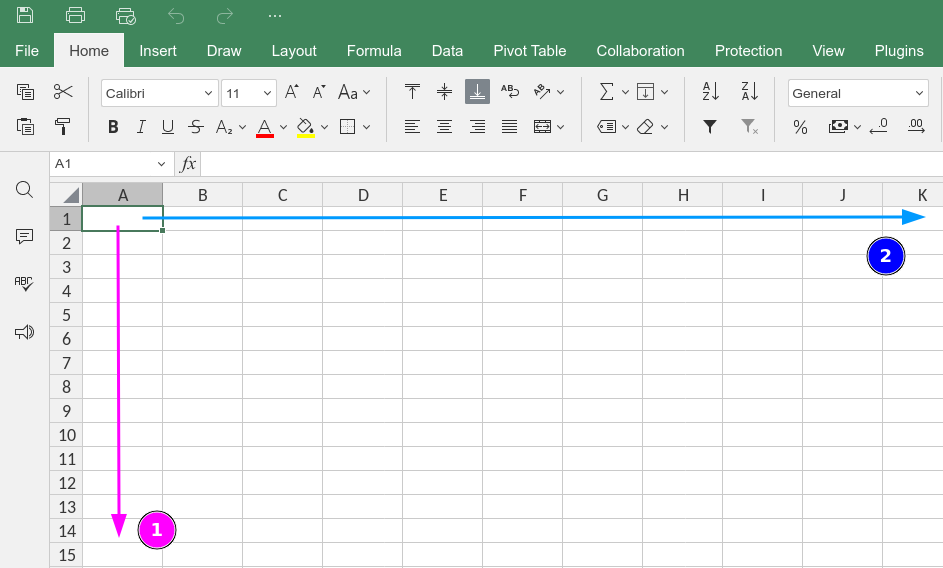
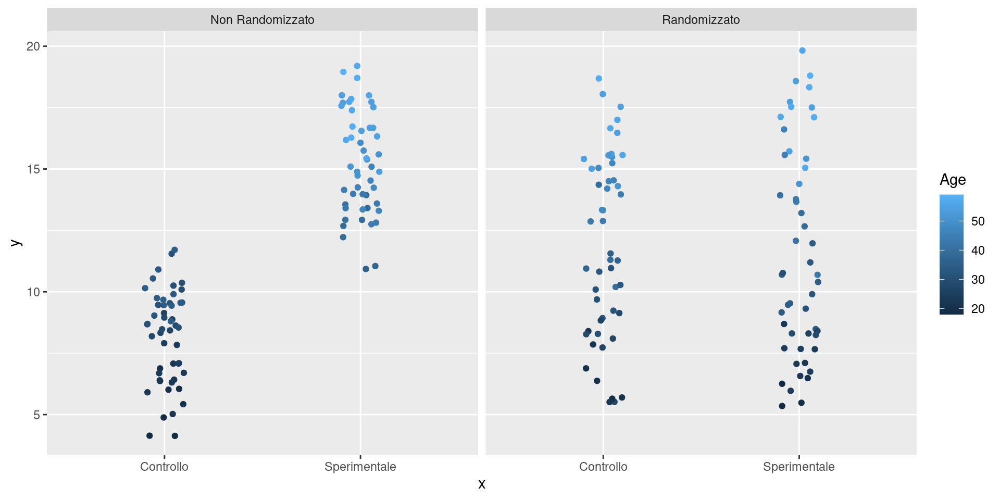
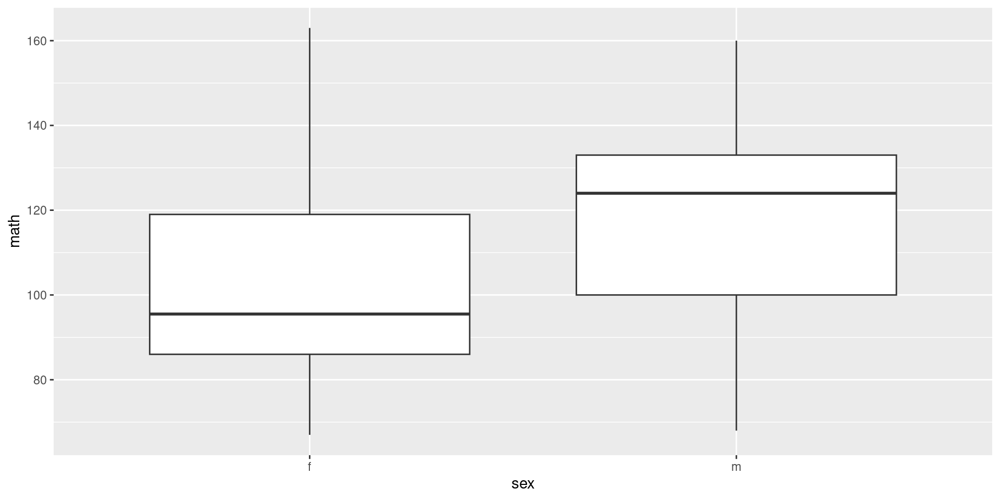

integer() # numeri interi (senza virgola)
numeric() # numeri (con la virgola)
character() # stringhe di testo ~ categoriali
ordered() # stringhe di testo ordinate ~ ordinaliIntroduzione al Corso
ADCOM 2025-2026
Filippo Gambarota PhD
Università di Padova
Ultimo aggiornamento: 12-17-2025
Perchè imparare analisi dei dati?
Simpson’s paradox
qui esempio di california, per far vedere importanza di saper leggere e analizzare dati
https://setosa.io/simpsons/
La psicologia è una scienza statistica
Rispetto al pensiero comune dove le hard-sciences (fisica, ingegneria, matematica) richiedono competenze di analisi dei dati, sono le scienze sociali quelle più complesse:
- quantità direttamente non osservabili (latenti)
- grande differenze individuali scomponibile a vari livelli in interazione (geni-ambiente)
- dinamiche complesse con molte variabili coinvolte
Devo essere unə statisticə per fare lə psicologə?
Assolutamente no. Una buona metafora è:
La statistica studia il funzionamento del motore sia in termini di funzionamento attuale che come migliorarlo. Lə scienziatə (ad esempio in Psicologia) deve guidare bene la macchina.
Conoscere un pochino il motore aiuta MA non è necessario per essere un buon pilota.
Perchè capire la statistica?
Tanto quanto sapere l’inglese è necessario per conoscere la letteratura scientifica, conoscere la statistica è necessario per leggere in modo adeguato i risultati di un paper.
Lo dice anche il codice deontologico
Articolo 5: Lo psicologo è tenuto a mantenere un livello adeguato di preparazione e aggiornamento professionale, con particolare riguardo ai settori nei quali opera. La violazione dell’obbligo di formazione continua, determina un illecito disciplinare che è sanzionato sulla base di quanto stabilito dall’ordinamento professionale. Riconosce i limiti della propria competenza e usa, pertanto solo strumenti teorico – pratici per i quali ha acquisito adeguata competenza e, ove necessario, formale autorizzazione. Lo psicologo impiega metodologie delle quali è in grado di indicare le fonti e riferimenti scientifici, e non suscita, nelle attese del cliente e/o utente, aspettative infondate.
Lo dice anche il codice deontologico
Articolo 7: Nelle proprie attività professionali, nelle attività di ricerca e nelle comunicazioni dei risultati delle stesse, nonché nelle attività didattiche, lo psicologo valuta attentamente, anche in relazione al contesto, il grado di validità e di attendibilità di informazioni, dati e fonti su cui basa le conclusioni raggiunte; espone all’occorrenza, le ipotesi interpretative alternative, ed esplicita i limiti dei risultati. Lo psicologo, su casi specifici, esprime valutazioni e giudizi professionali solo se fondati sulla conoscenza professionale diretta ovvero su una documentazione adeguata ed attendibile.
Formule, formule, formule
Tuttə voi conoscete e capite questa formula giusto? Possiamo dare per scontate queste cose?
\[ L(\mathbf{\beta}, \sigma^2 \mid \mathbf{y}) = \prod_{i=1}^n \frac{1}{\sqrt{2\pi \sigma^2}} \exp\left( -\frac{(y_i - \mathbf{x}_i^\top \mathbf{\beta})^2}{2\sigma^2} \right) \]
In realtà, nemmeno io la capisco fino in fondo. L’obiettivo di questo corso non è capire o studiare le formule ma capire più ad alto livello quello che implicano.
Un piccolo esempio
Immaginate di leggere su un paper di due studi dove un gruppo clinico e un gruppo di controllo vengono confrontati in un certo costrutto psicologico misurato tramite una certa scala self-report. Nel primo studio viene raccolto un campione di 30 soggetti. Nel secondo studio viene raccolto un campione di 300 soggetti.
Nel primo studio viene riportato che il gruppo clinico ha una misura significativamente maggiore nella variabile d’interesse, mentre il secondo studio non riporta differenze significative.
Se doveste scommettere, su quale dei due studi puntereste rispetto ad aver trovato un risultato empiricamente vero?
Metodologia della ricerca
https://learningstatisticswithr.com/
A theoretical construct. This is the thing that you’re trying to take a measurement of, like “age”, “gender” or an “opinion”. A theoretical construct can’t be directly observed, and often they’re actually a bit vague.
- A measure. The measure refers to the method or the tool that you use to make your observations. A question in a survey, a behavioural observation or a brain scan could all count as a measure.
- An operationalisation. The term “operationalisation” refers to the logical connection between the measure and the theoretical construct, or to the process by which we try to derive a measure from a theoretical construct.
- A variable. Finally, a new term. A variable is what we end up with when we apply our measure to something in the world. That is, variables are the actual “data” that we end up with in our data sets.
Tipologia di variabili
Diverse variabili, diverse analisi
Prima di imparare ad analizzare i dati è importante capire come i dati vengono raccolti e strutturati. Quando raccogliamo o trattiamo una variabile, chiediamoci sempre quale sia la tipologia. Il tipo di variabile influenza diversi aspetti, come:
- quali statistiche descrittive sono sensate e quali sono più informative
- le rappresentazioni grafiche più informative
- il modello statistico più adeguato per quella variabile
Variabili, le tipologie principali
Possiamo individuare 4 tipologie principali di variabili:
- nominale
- ordinale
- intervalli
- rapporti
Questa viene anche chiamata tassonomia NOIR.
Variabili di tipo nominale
Le variabili di tipologia nominale sono anche definite variabili categoriali. Sono quindi delle etichette, verbali o numeriche, che vengono assegnate ad una tipologia di osservazione. Ad esempio:
- Regione di residenza
- Colore degli occhi
- Religione
- Categoria diagnostica
Le diverse categorie sono interscambiabili quindi non c’è un ordine predefinito. L’unica operazione consentita è quella di contare le diverse categorie calcolando, in vari modi, distribuzioni di frequenza.
Variabili di tipo nominale, esempi:
Lo vedremo meglio nelle prossime lezioni, ma possiamo rappresentare le frequenze tramite dei barplot:

Variabili di tipo nominale, quali operazioni?
Caution
Cosa succede, secondo voi, se dovessi calcolare la media di una variabile categoriale?
E se dovessi calcolare la varianza o la mediana?
In sostanza, la tipologia di variabile è spesso legata anche a quali operazioni sono permesse, sensate o informative. In questo caso, calcolare la regione media non ha alcun senso.
Variabili di tipo ordinale
Le variabili di tipo ordinale sono quelle più comunemente utilizzate in Psicologia ed anche quelle in un certo senso meno intuitive.
Alcuni esempi:
- Risposte su scale likert
- Status socio-economico (e.g., alto, medio e basso)
- Livello d’istruzione
Variabili di tipo ordinale
Rispetto alle variabili categoriali, le variabili ordinali hanno un ordine. Possiamo quindi pensarle categorie alle quali assegnamo un numero progressivo.
Quello che non è definito per le variabili ordinali, è la distanza tra le categorie. Potremmo assegnare allo status socio-economico 1 = basso, 2 = medio e 3 = alto, come 1.5, 2, 2.1.
In altri termini, la distanza tra le categorie non è nota e quindi non è utilizzabile come informazione.
Variabili di tipo ordinale, esempi:
Anche qui, lo vedremo meglio nelle prossime lezioni ma un grafico a barre, ordinato è un tipo di rappresentazione grafica utilizzabile.

Variabili su scala ad intervalli
Questo è il primo tipo di variabile numerica in senso stretto. Le principali caratteristiche sono:
- L’ordine è significativo (questo viene ereditato dalle variabili ordinali)
- Le differenze (intervalli) tra due valori sono note e costanti per tutta la scala
- Non c’è uno zero assoluto definito come assenza della proprietà misurata
La mancanza di zero assoluto rende quindi non intepretabili i rapporti tra valori, mentre lo sono le differenze.
Variabili su scala ad intervalli: esempi
Alcuni esempi sono:
- Temperatura come ad esempio Celsius o Fahrenheit
- In generale le misure psicologiche come intelligenza, personalità, etc.
- Le date sul calendario
Possiamo dire che la distanza tra un QI di 100 e 110 è la stessa rispetto ad un QI di 115 e 125 (sono 10 punti di QI). Non possiamo dire che una persona che ha QI di 200 sia il doppio più intelligente di un QI di 100.
Variabili su scala ad intervalli: esempi

Variabili su scala a rapporti
Questo è il tipo più completo di variabile numerica che solitamente si trova nelle misurazioni fisiche. Eredità tutte le proprietà precedenti aggiungendo la presenza di uno zero assoluto inteso come assenza della proprietà.
Qualche esempio:
- Il tempo inteso come minuti, secondi, millisecondi: tempi di reazione in esperimenti cognitivi
- Segnale psicofisiologico come EEG, ECG, etc.
La presenza dello zero assoluto permette di poter calcolare rapporti significativi. Possiamo dire che 20 secondi sono il doppio del tempo rispetto a 10 secondi.
Tipologia di variabili, riassunto:
Le 4 tipologie di variabili sono gerarchicamente ordinate rispetto alle operazioni permissibili e significative:
- categoriali –> uguaglianza: possiamo dire se due osservazioni sono nella stessa categoria
- ordinali –> ranking: possiamo dire chi è maggiore tra due osservazioni
- intervalli –> distanze: possiamo interpretare la distanza tra due osservazioni rapporti –> rapporti: possiamo calcolare il rapporto tra due osservazioni
Intervalli vs ordinale
Questa tassonomia non viene sempre rispettata. Ad esempio, le variabili ordinali come le scale likert vengono comunemente trattate come scale ad intervalli o anche a rapporti. Ad esempio viene assunto che la differenza tra 1 (per niente) e 2 (poco) sia la stessa che per altri livelli.
Operazioni permissibili
Vedremo meglio quando parleremo delle varie statistiche descrittive. Tuttavia, in base al tipo di variabile ci sono delle operazioni permissibili.

Fonte: Stevens (1946)
Dataset
Dataset
Il dataset è l’insieme delle variabili che sono state raccolte in uno specifico esperimento. Contiene tutte o una parte delle variabili che verranno utilizzate nei vari modelli statistici.
Per intenderci, possiamo immaginare un classico dataset come un foglio Excel composto da un certo numero di righe e colonne:
Righe e colonne
Il dataset è una struttura dati bidimensionale formata da \(n\) righe e \(p\) colonne. La dimensione totale è \(n \times p\) (il numero di celle). La convenzione è di indicare:
- \(n\) come le unità statistiche o osservazioni
- \(p\) le variabili quindi le proprietà misurate su quelle specifiche unità statistiche
Quindi, per ogni riga \(n\) noi abbiamo tutte le caratteristiche dell’osservazione \(n\). In ogni colonna \(p\) abbiamo tutte le osservazioni per quella specifica caratteristica.
Dataset come principale struttura dati
Tutti i principali software per eseguire analisi dei dati come R, SPSS, Jamovi o JASP utilizzano di base questa struttura dati bidimensionale.
Solitamente, i dati vengono raccolti tramite software ad esempio Google Form, Qualtrics, etc. che producono in output un database, ad esempio un foglio Excel.
Colonne come variabili
Ogni colonna in un dataset è indipendente nel senso che può essere di tipologia diversa. Possiamo avere una colonna che indica il nome (quindi stringhe di testo), una che indica l’età in anni (quindi numeri interi) e una che indica il peso in kg (quindi numeri con la virgola).
In alcuni software inoltre le variabili possono anche essere indicate usando la tassonomia NOIR. Quindi possiamo avere numeri o stringhe di testo che hanno un ordine oppure sono delle semplici categorie.
Colonne come variabili, Jamovi

Esempio di variabili in Jamovi
Colonne come variabili, R
In R abbiamo diverse tipologie di dato:
Colonne come variabili
In realtà, possiamo codificare le variabili nel modo che vogliamo, è sufficiente avere una regola. Possiamo indicare ad esempio 4 categorie come il colore degli occhi con i numeri da 1 a 4.
La media dei numeri da 1 a 4 è permessa ovviamente MA il risultato non ha senso rispetto alla variabile originale.
Costruite un dataset sempre con il tipo di variabile con il tipo che più si avvicina a quello originale, in modo da limitare questo tipo di errori.
Esempi di dataset
metti qui qualche link a fogli google con esempi di dataset. Metti i link in lettura e tu come editor.
(cattivi) Esempi di dataset
qui metti qualche esempio a dataset con dei problemi:
- stringhe non consistenti
- nessun nome di variabile
- tipi delle variabili non rispettati
La misura in Psicologia
La misura in Psicologia
La misurazione in Psicologia è forse l’argomento più complesso, critico ed affascinante di tutta la ricerca Psicologica e della Psicometria.
Lo scopo del corso non è quello di fornire una panoramica esaustiva riguardo la misurazione ed il testing ma di fornire uno sguardo critico rispetto alle misure che utilizziamo.
Le differenti variabili (colonne) del nostro dataset sono delle misurazioni più o meno precise di costrutti più o meno definiti.
Capire questo punto e capire come valutare la qualità delle nostre variabili è fondamentale per comprendere i risultati dell’analisi dei dati.
GIGO - Garbage In, Garbage Out
Il GIGO è un principio cardine nell’analisi dei dati. L’idea è che non c’è analisi sofisticata, algoritmo o procedura che possa risolvere il problema della bassa qualità dei dati.

GIGO - Garbage In, Garbage Out
In Psicologia, la qualità dei dati è sempre legata al tipo di strumento, alla sua affidabilità, precisione e alla procedura di acquisizione.
Pensate ad un dataset dove una delle colonne identifica un punteggio ad un questionario di depressione. Vediamo che questo è, per esempio, maggiore in soggetti italiani vs stranieri.
Concludiamo che, per qualche motivo culturale, genetico o psicologico gli italiani abbiano una tendenza maggiore alla depressione.
GIGO - Garbage In, Garbage Out
Tuttavia, non abbiamo misurato la depressione come se misurassimo il peso o l’età ma un insieme di item che in teoria dovrebbero essere legati al costrutto depressione.
L’assunzione implicita è quindi che:
- il questionario misuri effettivamente e principalmente la depressione
- che misurandola più volte, questa sia più o meno simile
- che gli item vengano compresi allo stesso modo
- che gli item siano abbastanza sensibili da differenziare le persone
Qualità della misura
Quindi non è sufficiente avere una misura di depressione ma dobbiamo chiederci:
- quanto è precisa la misura
- quanto è valida e affidabile
- quanto è specifica vs aspecifica
- …
Variabili latenti e osservate
In Psicologia, nella maggior parte dei casi siamo interessati a costrutti detti latenti. Latenti perchè non sono direttamente osservabili.
Non sono direttamente osservabili ma sono indirettamente osservabili tramite degli indicatori. La qualità della nostra osservazione quindi dipende dalla qualità degli indicatori.
Gli indicatori sono ad esempio gli item di un questionario o un insieme di questionari. La variabile latente è ad esempio la depressione.
Un esempio
Vediamo un esempio di item del BDI-II:
- Non sono più irrequieto o teso del solito.
- Mi sento più irrequieto o teso del solito.
- Sono così irrequieto o agitato che è difficile stare fermo.
- Sono così irrequieto o agitato che devo continuare a muovermi o a fare qualcosa.
Perchè questo indicatore viene utilizzato per la depressione secondo voi?
Un esempio
Teoricamente, tra le manifestazioni cliniche della depressione è presente agitazione e irrequietezza. Quindi, se misurassi questa manifestazione mi aspetterei, in media, punteggi elevati in soggetti depressi.
Quindi il collegamento tra indicatore e costrutto latente è teorico e viene assunto o inferito dall’osservazione ma non è scontato.
Inoltre, ci possono essere molti modi diversi di misurare l’irrequietezza che quindi concorrono a misurare (indirettamente) più o meno accuratamente il costrutto latente.
Validità di una misura
Validità di una misura
La validità viene intesa come il grado di sovrapposizione tra la misura ed il costrutto latente.
Spesso, semplificando, viene detto che la validità di una misura (ad esempio un questionario) è la sua capacità di misurare quello che si prefigge (teoricamente) di misurare.
Ci sono diversi sottotipi di validità:
- Validità interna
- Validità esterna
- Validità di costrutto
- Validità di facciata
- Validità ecologica
Affidabilità di una misura
La validità di una misura è la corrispondenza teorica con il costrutto latente. L’affidabilità invece fa riferimento al processo di misurazione.
Una misura affidabile fornisce risultati consistenti (in base a diversi indici) rispetto a diverse instanze del processo di misura.
Risulta centrale quindi il concetto di errore di misura.
Affidabilità, diverse tipologie
Ci sono diverse tipologie di affidabilità (in inglese reliability):
- Affidabilità test-retest (test-retest reliability)
- Affidabilità tra giudici (interrater realiability)
- Affidabilità tra forme parallele (parallel form reliability)
- Consistenza interna (internal consistency)
Affidabilità test-retest
Se la misura utilizzata è un indicatore di un costrutto latente tendialmente stabile nel tempo, più misurazioni dello stesso indicatore dovrebbero produrre risultati simili.
Affidabilità tra giudici
Se diversi giudici/sperimentatori giungono a risultati simili usando un indicatore in modo indipendente, allora quell’indicatore ha una buona affidabilità.
Affidabilità tra forme parallele
Consistenza interna
Quando diversi indicatori sono operazionalizzazioni dello stesso costrutto latente anche le misurazioni rilevate dovrebbero riflettere questo legame.
In altri termini, i soggetti dovrebbero rispondere (in media) in modo consistente ad indicatori che riflettono uno stesso costrutto latente.
Affidabilità e validità, alcuni esempi
Pensate a voler misurare l’ansia con un solo item chiedendo:
quanto ti senti agitatə in questo momento?
Questa misura è chiaramente valida (legata teoricamente al costrutto ansia) ma è molto instabile, poco precisa e può dipendere da molti fattori sia personali che contestuali.
L’errore di misura dell’indicatore ansia sarebbe molto pur essendo un indicatore teoricamente valido.
Affidabilità e validità, alcuni esempi
Un esempio invece di misure affidabili ma non per forza valide riguarda gli indici psicofisiogici. Immaginiamo di vedere la relazione tra indici psicofisiologici come il battito cardiaco e la depressione.
La strumentazione per misurare il battito cardiaco può essere molto affidabile e con poco errore di misura. Tuttavia il legame tra battito cardiaco e depressione può essere meno chiaro e non per forza del tutto valido.
Sensibilità e range delle misure
Un’altro aspetto importante riguarda la granularità delle misure. In altri termini, se siamo interessati a misurare variazioni nel costrutto latente (differenza di depressione tra due gruppi di individui) dobbiamo assicurarci che l’indicatore sia abbastanza sensibile per cogliere queste differenze.
Sarebbe come trovare la temperatura ideale ma possiamo regolarla solo di 5 gradi alla volta. Per quanto il termostato sia affidabile e valido come misura, la sua granularità non è adeguata.
Effetto soffitto o pavimento
In un certo senso legato alla granularità, la mia misura deve poter differenziare le diverse osservazioni ovvero non devono esserci effetti soffitto o pavimento.
Immaginate una domanda di matematica troppo difficile o troppo facile dove tuttə sbagliano o fanno corretto. Quella domanda non è una buona domande perchè non mi permette di distinguere le abilità delle mie osservazioni.
Terminologia
Quando parliamo di esperimenti, ricerche e analisi dati la terminologia è importante:
- \(y\) sono gli outcomes (uno o più). Solitamente chiamate anche variabili dipendenti (ma preferisco outcomes)
- \(x\) sono i predittori. Solitamente chiamate anche variabili indipendenti (ma preferisco predittori)
Terminologia
Per costrutto o variabile latente intendiamo qualcosa di non direttamente osservabile se non indirettamente tramite indicatori.
Il legame tra variabile latente e indicatori si chiama operazionalizzazione ovvero definire indicatori validi e affidabili del costrutto latente di interesse.
Disegni di ricerca
Disegni di ricerca
Non tutte le ricerche dove si analizzano dei dati sono della stessa tipologia. Le informazioni ed il grado di confidenza nel poter trarre informazioni causali dipende dalla tipologia di studio. Ci sono due tipologie principali:
- Disegni sperimentali
- Disegni non-sperimentali
Disegni sperimentali
Un disegno di ricerca sperimentale, ha come aspetto principale il controllo e la manipolazione delle variabili, nello specifico i predittori \(x\).

Disegni sperimentali, un esempio
Il classico esempio è la ricerca medica. Voglio valutare l’efficiacia di un certo farmaco o trattamento (\(x\)). Semplificando somministro il trattamento sul 50% dei soggetti e un placebo nel restante 50%.
Se l’outcome \(y\) cambia tra i due gruppi, c’è una relazione causale tra il trattamento \(x\) ed il cambiamento nell’outcome \(y\).
Disegni sperimentali
Questo presuppone che, i due gruppi differiscano solo per il trattamento \(x\) e tutte le altre variabili (che potrebbero avere un effetto) siano controllate.
Questo non è sempre (mai) possibile e quindi si ricorre alla randomizzazione. Assegnando casualmente i soggetti ai due gruppi si limita l’impatto di altre variabili.
Randomizzazione, perchè funziona?
Immaginate di avere 100 persone, un trattamento \(x\) ed un outcome \(y\). Immaginate che per qualche ragione, l’età (per semplicità adulti e anziani) sia associata ad un diverso livello di \(y\).
Randomizzazione, perchè funziona?
La randomizzazione quindi mitiga (e in teoria rimuove) l’effetto di variabili non direttamente controllate assegnando gli individui in modo casuale al trattamento.
Perchè non randomizziamo sempre?
Il non randomizzare non è una scelta spesso. Ci sono delle condizioni dove non è possibile randomizzare per motivi etici o strettamente empirici.
Immaginate di dover capire l’impatto sulla salute di un certo comportamento (e.g., mangiare un certo alimento). Idealmente dovreste prendere in modo casuale soggetti, assegnarli una dieta e vedere l’impatto.
Quello che invece si fa è raccogliere su larga scala le abitudini di un campione di soggetti e vedere le associazioni con l’outcome.
Perchè non randomizziamo sempre?
Il problema è che non potendo randomizzare, non è possibile isolare chiaramente l’effetto del predittore d’interesse.
In realtà possiamo:
- Includere tutte le possibili variabili come predittore (regressione multipla) ma questo è valido solo se siamo sicuri di averle inserite tutte (molto poco plausibile)
- Evidenziare un’associazione tra \(x\) e \(y\) ma senza poterne trarre una relazione causale.
Quasi-esperimenti
I quasi-esperimenti o studi osservazionali sono quelli studi dove vengono rilevate delle variabli e si vedono le associazioni.
Consegnare un questionario a \(n\) persone e vedere associazioni tra variabili è uno studio osservazionale dove quasi mai possiamo inferire relazioni causali.
Disegni di ricerca
Mellis (2020) fornisce una panoramica sulla tipologia di studi. Anche questo sito https://www.cebm.ox.ac.uk/resources/ebm-tools/study-designs fornisce una rappresentazione grafica. La nomenclatura dipende molto dalla disciplina ma la grande distinzione è la presenza o meno di randomizzazione e la manipolazione delle variabili.

Confounder e artefatti
Confounder e artefatti
La validità di uno studio e di un’analisi dei dati può essere compromessa da confounder e artefatti. I confounder, come dice la parola, sono variabili che confondono la relazione che assumiamo e osserviamo tra \(x\) e \(y\).

Confounder
L’idea è che se c’è una variabile \(z\) che è legata sia ad \(x\) che a \(y\) ma io non la osservo/raccolgo. La relazione tra \(x\) e \(y\) è parzialmente o totalmente spuria.
Confounder, un esempio
Immaginate di raccogliere dei dati di bambinə e ragazzə dai 6 ai 18 anni. Raccogliete punteggi a test di matematica e raccogliete il peso. Non avete altre informazioni.
Andate a questo link e provate ad esplorare il dataset. Quali potrebbero essere dei confounder?
Confounder, un esempio
In pratica, \(z\) (l’età in questo caso) è una variabile legata sia a \(x\) che a \(y\) che non osserviamo ma spiega totalmente (o parzialmente) la relazione \(y \sim x\). Vedremo come tenere conto di \(z\) statisticamente ma i confounder possono renderci la vita molto complessa.

Simpson’s Paradox
Nell’autunno del 1973, l’Università della California a Berkeley rese pubblici i dati relativi alle ammissioni ai corsi di laurea magistrale. Cosa potreste concludere guardando i dati aggregati?

Simpson’s Paradox
In modo naive si potrebbe concludere che ci sia un bias verso l’ammissione di candidati di sesso maschile. Ma come abbiamo imparato per i confounder ci potrebbero essere altre spiegazioni.
Quali altre spiegazioni ci potrebbero essere? Vi ricordo che:
- abbiamo solo il sesso come informazione riguardo i partecipanti
- i dati sono qui aggregati ma sono anche disponibili i dati separati per corso di studio
Simpson’s Paradox
Vediamo cosa succede se disaggreghiamo e separiamo per corso di studio. Potete trovare il dataset con le percentuali di ammissione separato per dipartimento qui:
Cosa potete notare?
Simpson’s Paradox
Facciamo un grafico (un pochino complesso) dei dati in questione:

Simpson’s Paradox
Sostanzialmente, se ordiniamo i corsi per la % totale di ammissione (un indice della difficoltà ad entrare) vediamo che:
- Gli studenti tendono ad applicare di più a dipartimenti più facili
- Le studentesse tendono ad applicare di più a dipartimenti più difficili
Anzi, se calcoliamo la media della percentuale di ammissione tra corsi, è leggermente più alta per le studentesse.
Simpson’s Paradox
Questo fenomeno si chiama Paradosso di Simpson e può accadere quando in presenza di un confounder (la difficoltà di ammissione) le conclusioni guardando i dati aggregati è diversa rispetto a guardare i dati disaggregati (in questo caso rispetto al corso).
Questo è un ottimo esempio di come conoscere o non conoscere l’analisi dei dati aiuta a trarre conclusioni più appropriate.
Esempio
Immaginate di voler vedere se ci sono differenze legate al sesso in una certa abilità (tipo matematica) e di raccogliere studentə. Raccogliete 100 studentə, somministrate la prova di matematica e poi guardate i risultati:
Esempio
Il test di matematica è affidabile e valido e la numerosità campionaria è adeguata (\(n = 500\)). Quali potrebbero essere le problematiche? Quali informazioni vorreste in aggiunta per capire meglio?
La domanda fondamentale riguarda il tipo di campione raccolto. Sono studenti e studentesse, ma sono rappresentativi (vedremo meglio questo concetto)?.
Esempio
Vediamo, ad esempio, il corso di studi da cui provengono:
| sex | dep | math | n |
|---|---|---|---|
| f | ing | 130.6 | 75 |
| f | psi | 89.6 | 175 |
| m | ing | 129.7 | 175 |
| m | psi | 90.7 | 75 |
- Il livello di matematica tra maschi e femmine è identico ma il livello di matematica tra studenti e studentesse di ingegneria vs psicologia è molto diverso.
- Il campione di studentesse è stato raccolto principalmente nel dipartimento di psicologia e quello dei maschi da quello di ingegneria
Esempio
In altri termini, un campione costruito in modo non adeguato, anche al netto di misure valide e affidabili ed una sufficiente numerosità campionaria può portare a conclusioni non valide.

Riferimenti
Bickel, P. J., Hammel, E. A., & O’connell, J. W. (1975). Sex bias in graduate admissions: data from berkeley: Measuring bias is harder than is usually assumed, and the evidence is sometimes contrary to expectation. Science (New York, N.Y.), 187, 398–404. https://doi.org/10.1126/science.187.4175.398
Mellis, C. M. (2020). How to choose your study design. Journal of Paediatrics and Child Health, 56, 1018–1022. https://doi.org/10.1111/jpc.14929
Stevens, S. S. (1946). On the theory of scales of measurement. Science (New York, N.Y.), 103, 677–680. https://doi.org/10.1126/science.103.2684.677